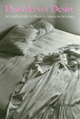

|
|
The
Afro-American Jeremiad
Appeals for Justice in America
Howard-Pitney, David
Analyzing the rhetorical style of black leaders
260 pp • Spring 1990
cloth 0-87722-673-3
EAN 978-0-87722-673-4
|
| 
|
Arms
and the Enlisted Woman
Stiehm, Judith Hicks
Explore the experience of American women in the military
New in Paperback!
352 pp • Fall 1988
paper 0-87722-705-5
EAN 978-0-87722-705-2
|
|
|
Beyond
the Barricades
The Sixties Generation Grows Up
Whalen, Jack, and Richard Flacks
Where do young revolutionaries go when the revolution doesn’t
happen?
New in Paperback!
324 pp • Spring 1989
paper 0-87722-707-1
EAN 978-0-87722-707-6
|
|
|
The
Carrot or the Stick for School Desegregation Policy
Magnet Schools or Forced Busing
Rossell, Christine H.
The first study comparing the long-term effectiveness of voluntary
desegregation plans with magnet programs to mandatory reassignment
plans
272 pp • Spring 1990
cloth 0-87722-682-2
EAN 978-0-87722-682-6
|
|
|
Challenging
the Boundaries of Reform
Socialism in Burlington
Conroy, W. J.
A case study of the achievements and failures of Bernard Sanders'
radical administration in Burlington, VT
288 pp • Spring 1990
cloth 0-87722-702-0
EAN 978-0-87722-702-1
|
|
|
Controlling
the Federal Bureaucracy
Riley, Dennis D.
A probing study examines the relationships between the federal
bureaucracy and the elements of society it is intended to serve
New in Paperback!
216 pp • Spring 1987
paper 0-87722-704-7
EAN 978-0-87722-704-5
|
| 
|
Democracy
and Development in Latin America
Economics, Politics and Religion in the Post-War Period
Lehmann, David
The integration of three considerable topics for modern Latin American
history
272 pp • 6x9 • Spring 1990
cloth 0-87722-723-3
EAN 978-0-87722-723-6
|
|
|
Descent
into Discourse
The Reification of Language and the Writing of Social History
Palmer, Bryan D.
Arguing that the current reliance on poststructuralism obscures
the origins, meanings, and consequences of historical events and
processes
312 pp • Spring 1990
cloth 0-87722-678-4
EAN 978-0-87722-678-9
|
|
|
Dilemmas
of Activism
Class, Community, and the Politics of Local Mobilization
Kling, Joseph M., and Prudence S. Posner, eds.
Focusing on three dilemmas that inherently shape the issues and
strategies around which people mobilize
384 pp • Spring 1990
cloth 0-87722-696-2
EAN 978-0-87722-696-3
|
| 
|
Disorders
of Desire
Sex and Gender in Modern American Sexology
Irvine, Janice M.
The first book to examine the development and impact of sexology
in the United States
272 pp • Spring 1990
cloth 0-87722-689-X
EAN 978-0-87722-689-5
|
|
|
E.
P. Thompson
Critical Perspectives
Kaye, Harvey J., and Keith McClelland, eds.
A wide range of authors discuss the historical, theoretical, and
political problems that have been central to Thompson's work
350 pp • Spring 1990
paper 0-87722-742-X
EAN 978-0-87722-742-7
cloth 0-87722-730-6
EAN 978-0-87722-730-4
|
|
|
Echoes
from the Holocaust
Philosophical Reflections on a Dark Time
Rosenberg, Alan, and Gerald E. Myers, eds.
The first book to focus comprehensively on the profound issues
and philosophical significance of the Holocaust
New in Paperback!
472 pp • Spring 1988
paper 0-87722-686-5
EAN 978-0-87722-686-4
|
|
|
Education
for Struggle
The American Labor Colleges of the 1920s and 1930s
Altenbaugh, Richard J.
A richly detailed history of the American workers' education movement
339 pp • 6x9 • Spring 1990
cloth 0-87722-680-6
EAN 978-0-87722-680-2
|
|
|
Evaluating
Art
Dickie, George
A theory about how to judge a work of art—as opposed to a theory
that explains why a particular work is defined as art
New in Paperback!
208 pp • Spring 1989
paper 0-87722-683-0
EAN 978-0-87722-683-3
|
|
|
Fire
on the Earth
Anselm Kiefer and the Postmodern World
Gilmour, John C.
A philosophical case study of Kiefer's work
272 pp • Spring 1990
cloth 0-87722-690-3
EAN 978-0-87722-690-1
|
|
|
For
Fun and Profit
The Transformation of Leisure into Consumption
Butsch, Richard, ed.
A case study of the achievements and failures of Bernard Sanders'
radical administration in Burlington, VT
288 pp • Spring 1990
paper 0-87722-740-3
EAN 978-0-87722-740-3
cloth 0-87722-676-8
EAN 978-0-87722-676-5
|
| 
|
Gender
Politics and MTV
Voicing the Difference
Lewis, Lisa A.
Challenging the idea that MTV presents only negative and sexist
images of women
300 pp • Spring 1990
cloth 0-87722-693-8
EAN 978-0-87722-693-2
|
|
|
The
Health of the Republic
Epidemics, Medicine, and Moralism as Challenges to Democracy
Beauchamp, Dan E.
A link between the health of the American republic and the health
of its citizens
New in Paperback!
312 pp • Fall 1988
paper 0-87722-729-2
EAN 978-0-87722-729-8
|
|
|
|
|
Italian
and Irish Filmmakers in America
Ford, Capra, Cuppola, and Scorsese
Lourdeaux, Lee
Four major American Film directors are studied through the lens
of their ethnicity Four major American film directors are studied
through the lens of their ethnicity
288 pp • Spring 1990
cloth 0-87722-697-0
EAN 978-0-87722-697-0
|
|
|
Jookin'
The Rise of Social Dance Formations in African-American Culture
Hazzard-Gordon, Katrina
The first analysis of the development of the jook and other dance
arenas in African-American culture
248 pp • Spring 1990
cloth 0-87722-613-X
EAN 978-0-87722-613-0
|
|
|
Justice
and School Systems
The Role of the Courts in Education Litigation
Flicker, Barbara, ed.
Examines the effectiveness and deficiencies of judicial intervention
into the problems of racial discrimination in education
456 pp • Spring 1990
cloth 0-87722-675-X
EAN 978-0-87722-675-8
|
|
|
Lesbian
and Gay Writing
An Anthology of Critical Essays
Lilly, Mark, ed.
The first volume of critical essays about lesbian and gay literature
that is written entirely by lesbians and gay men
220 pp • Spring 1990
cloth 0-87722-706-3
EAN 978-0-87722-706-9
|
|
|
"Looking
Up at Down"
The Emergence of Blues Culture
Barlow, William
The evolution of the various strands of blues music
New in Paperback!
464 pp • Spring 1989
paper 0-87722-722-5
EAN 978-0-87722-722-9
|
|
|
Making
Equity Planning Work
Leadership in the Public Sector
Krumholz, Norman, John Forester, and Alan A. Altshuler
Lessons from an experiment in equity planning
271 pp • 6x9 • Spring 1990
paper 0-87722-701-2
EAN 978-0-87722-701-4
cloth 0-87722-700-4
EAN 978-0-87722-700-7
|
|
|
The
Moral Philosophy of G. E. Moore
Sylvester, Robert Peter, Ray Perkins, Jr., R. W. Sleeper, and Tom
Regan, eds.
A close examination of Moore's the early essays show that Moore’s
famous "naturalistic fallacy argument" has been widely
misunderstood
240 pp • Spring 1990
cloth 0-87722-645-8
EAN 978-0-87722-645-1
|
| 
|
Nietzsche's
Zarathustra
Higgins, Kathleen Marie
Provides interpretive guidelines for making sense of Thus Spoke
Zarathustra
New in Paperback!
328 pp • Fall 1987
paper 0-87722-687-3
EAN 978-0-87722-687-1
|
|
|
Opera
Muliebria
Women and Work in Medieval Europe
Herlihy, David
Vividly demonstrates that the subordination of women within a household
economy was specifically the product of the late Middle Ages
159 pp • Spring 1990
cloth 0-87722-714-4
EAN 978-0-87722-714-4
|
|
|
Over
There
The Story of America's First Great Overseas Crusade
Friedel, Frank, and Edward M. Coffman
The daily realities and shared emotions of men fighting the Great
War
270 pp • Spring 1990
cloth 0-87722-718-7
EAN 978-0-87722-718-2
|
|
|
Problem-Oriented
Policing
Goldstein, Herman
A conceptual framework for studying the police and for planning
improvements in police operations
249 pp • Spring 1990
cloth 0-87722-719-5
EAN 978-0-87722-719-9
|
|
|
Reading
Rousseau in the Nuclear Age
Roosevelt, Grace G.
A fresh interpretation of Rousseau's theory of international conflict
288 pp • Spring 1990
cloth 0-87722-679-2
EAN 978-0-87722-679-6
|
| 
|
The
Reconquest of Montreal
Language Policy and Social Change in a Bilingual City
Levine, Marc V.
A case study of the achievements and failures of Bernard Sanders'
radical administration in Burlington, VT
320 pp • Spring 1990
cloth 0-87722-703-9
EAN 978-0-87722-703-8
|
|
|
Revolution
A Sociological Interpretation
Kimmel, Michael S.
A survey of classical perspectives on revolution with criteria
for a structural theory of revolution
294 pp • Spring 1990
paper 0-87722-741-1
EAN 978-0-87722-741-0
cloth 0-87722-736-5
EAN 978-0-87722-736-6
|
|
|
Rules
for Rulers
The Politics of Advice
Meltsner, Arnold J.
A witty, modern-day Machiavelli offers advice to government and
corporate leaders on the human pitfalls of seeking and using advice
208 pp • Spring 1990
cloth 0-87722-685-7
EAN 978-0-87722-685-7
|
|
|
The
Souls of the Skyscraper
Female Clerical Workers in Chicago, 1870-1930
Fine, Lisa M.
Documents and explains the transformation of clerical work from
a male to a female occupation in the late 19th century
264 pp • Spring 1990
cloth 0-87722-674-1
EAN 978-0-87722-674-1
|
|
|
The
Struggle for Academic Democracy
Lessons from the 1938 Revolution in New York's City Colleges
Edel, Abraham
Evaluates claims for democratic participation in terms of the ultimate
mission of the university
240 pp • Spring 1990
cloth 0-87722-691-1
EAN 978-0-87722-691-8
|
|
|
To
Reason Why
The Debate about the Causes of U.S. Involvement in the Vietnam
War
Kimball, Jeffrey P., ed.
Thirty-eight readings that best exemplify the conflicting ideas
and theories about U.S. intervention in Vietnam
216 pp • Spring 1990
cloth 0-87722-709-8
EAN 978-0-87722-709-0
|
|
|
Transcendence
and Wittgenstein's Tractatus
Hodges, Michael P.
Unifies Wittgenstein's early philosophy in terms of the notion
of transcendence
172 pp • Spring 1990
cloth 0-87722-692-X
EAN 978-0-87722-692-5
|
|
|
Transforming
Knowledge
Minnich, Elizabeth Kamarck
Examining the heritage and errors of a scholastic tradition that
considered the Euro-American male the norm and ideal for humankind
210 pp • 6x9 • Spring 1990
cloth 0-87722-695-4
EAN 978-0-87722-695-6
|
|
|
Women,
Employment and Family in the International Division of Labour
Stichter, Sharon, and Jane L. Parpart, eds.
Investigates the interrelations between women's waged work and
household roles
288 pp • Spring 1990
cloth 0-87722-739-X
EAN 978-0-87722-739-7
|
|
|
Work,
Inc.
A Philosophical Inquiry
Byrne, Edmund F.
Examining legal and philosophical problems for a new social contract
that is fair to workers
360 pp • Spring 1990
cloth 0-87722-688-1
EAN 978-0-87722-688-8
|